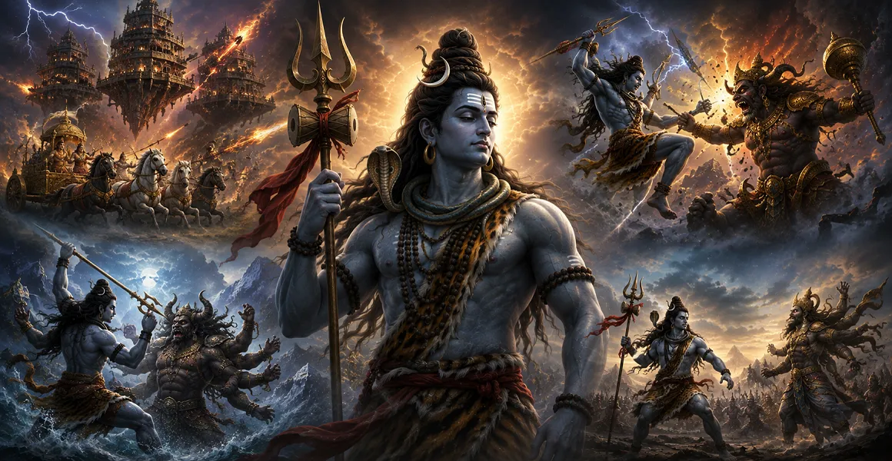

The Battle with Andhaka
অন্ধকাসুরের সঙ্গে যুদ্ধ
The fierce struggle with Andhaka reveals Shiva's power against a force driven by uncontrolled desire and darkness. In His terrible aspect, Mahadeva restores order and protects the divine realm.

In the sacred traditions surrounding Lord Shiva, divine battles are not merely tales of weapons and victory. They reveal Mahadeva as the power that rises when destructive forces threaten Dharma, the devas, devotees and the balance of creation.
The terrible forms of Rudra and Bhairava, the mighty Tripurantaka, the fierce battles against powerful asuras and the protection of those who surrender to Shiva all point toward a deeper truth: divine strength is ultimately placed in the service of cosmic order.
These sacred narratives present different manifestations of Shiva's protective power. Read them not only as battles between opposing forces, but as devotional reflections on courage, surrender, ego, destruction and the restoration of Dharma.
The fierce struggle with Andhaka reveals Shiva's power against a force driven by uncontrolled desire and darkness. In His terrible aspect, Mahadeva restores order and protects the divine realm.
As Tripura's three cities became symbols of immense destructive power, Shiva appeared as Tripurantaka. His victory is remembered as the destruction of arrogance and the restoration of divine order.
The Rudra narratives portray Shiva as the fierce force that confronts disorder. His terrible energy is not aimless destruction, but a power that clears the path for renewal.
Bhairava represents a terrifying yet sacred manifestation of Shiva. His stories remind the devotee that pride and false authority cannot stand before the supreme reality.
In the sacred encounter with Arjuna, Shiva appears as the mysterious Kirata. The confrontation becomes a test of strength, humility and devotion before the Lord grants divine grace.
Again and again the sacred traditions describe the devas turning toward Shiva when destructive powers become overwhelming. Mahadeva stands as the ultimate refuge when all other strength is exhausted.
The Jalandhara tradition presents a formidable adversary whose power challenges the divine order. Shiva ultimately confronts the threat, showing that even extraordinary strength must bow before Dharma.
The destruction surrounding Daksha's sacrifice reveals the terrible consequence of disrespect toward the Divine. Shiva's grief and wrath become part of a profound sacred story of loss, justice and renewal.
Many Shiva traditions centre not on conquest but on protection. When sincere devotees are threatened, their faith becomes the bridge through which Mahadeva's grace is revealed.
Shiva's battles can also be contemplated inwardly. Darkness, anger, greed and pride become the inner enemies that the devotee must place before the light of Mahadeva.
Across the sacred narratives, Shiva remains the refuge who cannot be shaken by fear. His protection is remembered not merely as physical victory, but as freedom from spiritual despair.
The deepest message of Shiva's great battles is not violence. It is the restoration of balance, the defeat of destructive pride, and the return of creation toward Dharma and divine order.
The sacred battlefield can also be understood as the human heart. The outer stories give the devotee a language for confronting the forces that disturb inner peace.
Remembering Mahadeva gives the devotee courage to face difficulty without surrendering the heart to fear.
The fiercest battle is often within. Shiva's yogic stillness reminds us that true strength begins with mastery of the self.
The devotee does not need to carry every burden alone. Turning toward Mahadeva is itself a sacred act of surrender and trust.
When fear, anger or confusion rises within, pause before reacting. Remember the calm face of Mahadeva, His stillness in meditation, and His power to destroy what no longer serves Dharma.
“May Mahadeva destroy the darkness within, protect the path of Dharma, and grant the heart courage, wisdom and peace.”
🔱 Har Har Mahadev 🔱The great battles are only one part of Mahadeva's vast sacred world. Continue into the Shiva Purana to discover His incarnations, divine stories, Jyotirlingas and the teachings preserved through the sacred tradition.
📖 Enter Shiva Purana